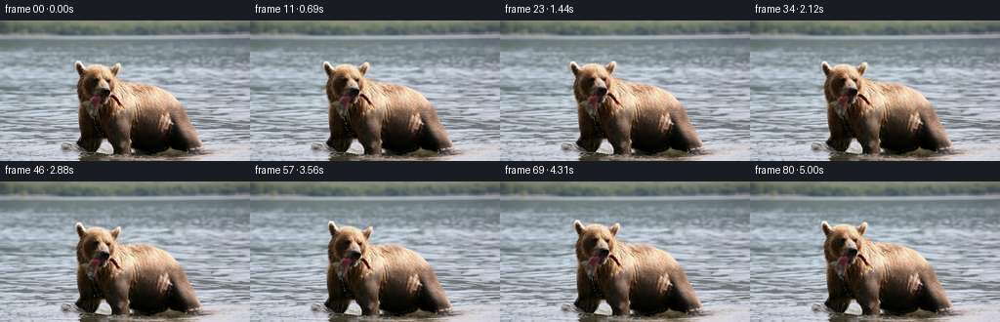
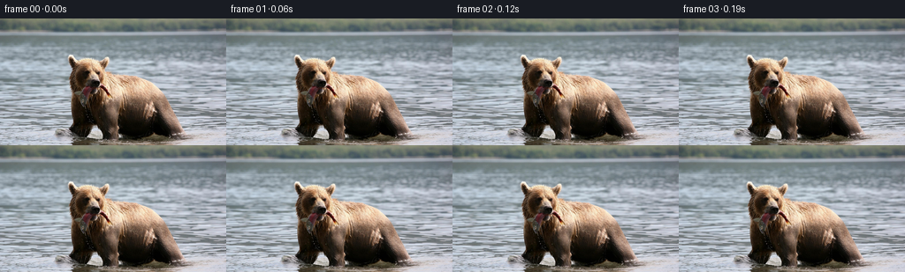

候选 01 · 2026-11-08T21:24:55.724598+00:00 · 点开播放与检查图
inspection.png

transition_check.png

代码变化
--- 上一保存版本
+++ 本次保存版本
@@ -0,0 +1,170 @@
+"""A photograph-preserving, analytic animation of the supplied first frame.
+
+All textures come from first_frame.png. Smooth, spatially varying coordinate
+maps articulate the head, jaw, fish and weight-bearing legs; the water has its
+own travelling-wave motion. No additional images or learned assets are used.
+"""
+from pathlib import Path
+import numpy as np
+from PIL import Image, ImageDraw
+from scipy.ndimage import distance_transform_edt, map_coordinates
+from scipy.interpolate import CubicSpline
+from artifact_io import save
+
+ROOT = Path(__file__).resolve().parent
+H, W = 144, 256
+Y, X = np.mgrid[:H, :W].astype(np.float64)
+
+def smooth(a):
+ a = np.clip(a, 0.0, 1.0)
+ return a*a*(3.0-2.0*a)
+
+def gaussian(cx, cy, sx, sy):
+ return np.exp(-0.5*(((X-cx)/sx)**2+((Y-cy)/sy)**2))
+
+# Geometry of the visible animal; this also extends its coordinate map smoothly
+# into adjacent water so motion never exposes a hole or a duplicate contour.
+outline = [(79,42),(81,41),(85,46),(87,48),(94,46),(103,46),
+ (111,49),(115,49),(120,44),(123,45),(123,50),(120,58),
+ (120,61),(130,63),(145,65),(158,68),(168,73),(177,81),
+ (184,91),(192,106),(200,122),(208,132),(202,135),(194,134),
+ (185,131),(179,128),(171,132),(163,134),(151,136),
+ (137,133),(134,137),(128,140),(118,138),(115,131),
+ (111,123),(106,122),(103,130),(98,136),(91,135),(83,131),
+ (78,126),(79,121),(82,117),(81,109),(81,97),(79,88),
+ (79,84),(77,78),(79,70),(79,64),(81,57),(79,52),(78,46)]
+geom = Image.new('L', (W,H), 0)
+ImageDraw.Draw(geom).polygon(outline, fill=255)
+inside = np.asarray(geom) > 0
+outside_dist = distance_transform_edt(~inside)
+inside_dist = distance_transform_edt(inside)
+# Flow support is broad enough that the fine fur/water boundary moves together.
+support = np.exp(-(outside_dist/11.0)**2)
+water_only = smooth((outside_dist-1.0)/5.0)
+head_weight = (1-smooth((Y-80)/29))*(1-smooth((X-116)/25))
+front_far = gaussian(88, 119, 9, 14)*smooth((Y-94)/30)
+front_near = gaussian(123, 122, 10, 18)*smooth((Y-96)/29)
+rear = gaussian(191, 122, 12, 16)*smooth((Y-95)/33)
+fish_left = gaussian(94, 91, 5.0, 7.8)
+fish_right = gaussian(121, 85, 4.5, 5.5)
+jaw = gaussian(104, 82, 8, 5)
+flank = gaussian(150, 95, 31, 29)
+
+kt = [0,.55,1.30,2.1,2.95,3.65,4.35,5.0625]
+head_x = CubicSpline(kt,[0,-.3,-2.3,-1.6,.6,1.7,.4,-.9],bc_type='clamped')
+head_y = CubicSpline(kt,[0,-.5,-1.3,.1,2.7,1.3,-.9,-.5],bc_type='clamped')
+head_a = CubicSpline(kt,np.deg2rad([0,-1.8,-4.4,-2.5,3.2,4.6,.4,-2.0]),bc_type='clamped')
+
+
+def flow(t):
+ progress = smooth(t/5.0625)
+ ramp = smooth(t/.55)
+ # A small forward weight shift, rather than a large artificial camera move.
+ gx = -1.7*progress + .42*np.sin(1.5*t)*ramp
+ gy = .34*np.sin(2.0*t)*ramp
+ scale = .009*progress
+ dx = np.full((H,W), gx) + (X-142)*scale
+ dy = np.full((H,W), gy) + (Y-134)*scale
+ breath = .22*np.sin(2.9*t)*ramp
+ dy -= breath*flank
+ # Rigid movement across the face, interpolating into the shoulder/neck.
+ a = float(head_a(t))
+ c,s = np.cos(a),np.sin(a)
+ px,py = X-104,Y-84
+ hx = (c-1)*px-s*py+float(head_x(t))
+ hy = s*px+(c-1)*py+float(head_y(t))
+ dx += hx*head_weight
+ dy += hy*head_weight
+ # Alternating small leg adjustments keep feet in the shallow water.
+ step = np.sin(1.8*t)*ramp
+ dx += -1.1*step*front_far + .65*step*front_near + .55*step*rear
+ dy += -.65*np.maximum(step,0)*front_far -.42*np.maximum(-step,0)*front_near
+ # Fish remains securely held at the muzzle, but its loose ends swing.
+ wiggle = ramp*(.67*np.sin(5.3*t)+.22*np.sin(9.1*t))
+ dx += .94*wiggle*fish_left - .82*wiggle*fish_right
+ dy += .20*wiggle*fish_left + .62*wiggle*fish_right
+ chew = .29*ramp*(np.sin(8.8*t)+.33*np.sin(17.6*t))
+ dy += chew*jaw
+ # River motion consists of travelling, perspective-scaled ripples, not a
+ # scrolling image. Phase subtraction guarantees identity at time zero.
+ depth = smooth((Y-16)/115)
+ wx = depth*(.44*(np.sin(.147*Y+.049*X-1.5*t)-np.sin(.147*Y+.049*X))
+ +.23*(np.sin(.086*Y-.034*X+2.05*t)-np.sin(.086*Y-.034*X))+.15*t)
+ wy = depth*(.37*(np.sin(.32*Y+.023*X-1.9*t)-np.sin(.32*Y+.023*X))
+ +.17*(np.sin(.68*Y-.046*X+1.35*t)-np.sin(.68*Y-.046*X)))
+ # Broad wave disturbances radiate from the two groups of submerged feet.
+ for cx,cy in [(96,135),(186,134)]:
+ r = np.sqrt((X-cx)**2+((Y-cy)*3.3)**2+1)
+ envelope = np.exp(-r/38)*smooth((r-4)/10)
+ wave = .31*envelope*(np.sin(.45*r-3.5*t)-np.sin(.45*r))
+ wx += wave*(X-cx)/r
+ wy += wave*(Y-cy)*3.3/r
+ dx = dx*support + wx*(1-support)
+ dy = dy*support + wy*(1-support)
+ return dx,dy
+
+
+def sample(a, x, y, order=1):
+ return map_coordinates(a,[y,x],order=order,mode='reflect',prefilter=order>1)
+
+
+def render(photo,t):
+ dx,dy = flow(t)
+ # Invert the forward deformation. This is important around the rotating
+ # muzzle: subtracting a flow just once otherwise stretches small features.
+ qx,qy = X-dx,Y-dy
+ for _ in range(4):
+ qx,qy = X-sample(dx,qx,qy),Y-sample(dy,qx,qy)
+ out = np.stack([sample(photo[:,:,c],qx,qy,3) for c in range(3)],axis=-1)
+ wet = sample(water_only,qx,qy)*smooth((Y-20)/100)
+ # Moving specular light rides existing water detail (low-contrast, non-white).
+ flicker = (np.sin(.49*qy+.031*qx-2.25*t)-np.sin(.49*qy+.031*qx))
+ amount = wet*flicker*.9
+ out += amount[:,:,None]*np.array([.83,.96,1.0])
+ # Small surface rings around the stance add soft outward-moving wakes.
+ rings = np.zeros((H,W))
+ for cx,cy,phase in [(97,135,0),(185,133,1.6)]:
+ rr = np.sqrt((X-cx+1.7*smooth(t/5))**2+((Y-cy)*3.6)**2+1)
+ env = np.exp(-rr/31)*smooth((rr-6)/9)
+ rings += env*(np.sin(rr*.56-3.8*t+phase)-np.sin(rr*.56+phase))
+ out += (wet*rings*1.4)[:,:,None]*np.array([.84,.96,1.0])
+ # A few individual water drops leave the fish, fall, then vanish on contact.
+ # Gaussian coverage is subpixel, so these do not become conspicuous dots.
+ for j,born in enumerate([.35,1.2,2.2,3.05,4.16]):
+ age = t-born
+ if 0 < age < 1.10:
+ dx0,dy0 = flow(born)
+ sx,sy = 98+(j%2)*.7,98
+ ox = sx+sample(dx0,np.array([sx]),np.array([sy]))[0]
+ oy = sy+sample(dy0,np.array([sx]),np.array([sy]))[0]
+ xx = ox-.9*age+.3*np.sin(j*2)
+ yy = oy+12*age+24*age*age
+ if yy < 136:
+ coverage = np.exp(-.5*(((X-xx)/.30)**2+((Y-yy)/(.43+.35*age))**2))
+ opacity = .52*smooth(age/.08)*smooth((136-yy)/4)
+ alpha = coverage*opacity
+ out = out*(1-alpha[:,:,None])+np.array([183,191,183])*alpha[:,:,None]
+ return np.clip(np.rint(out),0,255).astype(np.uint8)
+
+
+def main():
+ first = np.asarray(Image.open(ROOT/'first_frame.png').convert('RGB'))
+ assert first.shape == (H,W,3)
+ photo = first.astype(np.float64)
+ frames = [first.copy()]
+ for i in range(1,81):
+ frames.append(render(photo,i/16.0))
+ frames = np.stack(frames)
+ assert np.array_equal(frames[0], first)
+ save(frames, ROOT)
+ # A standard RGB video is provided in addition to the lossless pixel bundle.
+ try:
+ import imageio.v2 as imageio
+ imageio.mimwrite(ROOT/'video.mp4', frames, fps=16, codec='libx264',
+ quality=9, macro_block_size=None, pixelformat='yuv444p')
+ except ImportError:
+ pass
+ print(f'Saved {len(frames)} RGB frames, {W}x{H}, 16 fps.')
+
+if __name__ == '__main__':
+ main()
候选 02 · 2026-11-08T21:27:46.705832+00:00 · 点开播放与检查图
inspection.png

transition_check.png

代码变化
--- 上一保存版本
+++ 本次保存版本
@@ -6,8 +6,8 @@
"""
from pathlib import Path
import numpy as np
-from PIL import Image, ImageDraw
-from scipy.ndimage import distance_transform_edt, map_coordinates
+from PIL import Image
+from scipy.ndimage import map_coordinates
from scipy.interpolate import CubicSpline
from artifact_io import save
@@ -22,25 +22,19 @@
def gaussian(cx, cy, sx, sy):
return np.exp(-0.5*(((X-cx)/sx)**2+((Y-cy)/sy)**2))
-# Geometry of the visible animal; this also extends its coordinate map smoothly
-# into adjacent water so motion never exposes a hole or a duplicate contour.
-outline = [(79,42),(81,41),(85,46),(87,48),(94,46),(103,46),
- (111,49),(115,49),(120,44),(123,45),(123,50),(120,58),
- (120,61),(130,63),(145,65),(158,68),(168,73),(177,81),
- (184,91),(192,106),(200,122),(208,132),(202,135),(194,134),
- (185,131),(179,128),(171,132),(163,134),(151,136),
- (137,133),(134,137),(128,140),(118,138),(115,131),
- (111,123),(106,122),(103,130),(98,136),(91,135),(83,131),
- (78,126),(79,121),(82,117),(81,109),(81,97),(79,88),
- (79,84),(77,78),(79,70),(79,64),(81,57),(79,52),(78,46)]
-geom = Image.new('L', (W,H), 0)
-ImageDraw.Draw(geom).polygon(outline, fill=255)
-inside = np.asarray(geom) > 0
-outside_dist = distance_transform_edt(~inside)
-inside_dist = distance_transform_edt(inside)
-# Flow support is broad enough that the fine fur/water boundary moves together.
-support = np.exp(-(outside_dist/11.0)**2)
-water_only = smooth((outside_dist-1.0)/5.0)
+# Analytic ellipsoidal motion volumes extend the animal's coordinate map
+# smoothly into adjacent water. They are procedural geometry, not image assets.
+volumes = [(143,100,49,35), (100,71,22,25), (83,50,5,9),
+ (118,51,5,9), (90,110,11,26), (123,115,14,24),
+ (188,115,16,20), (198,129,10,6)]
+separation = np.full((H,W), 1e3)
+for cx,cy,rx,ry in volumes:
+ qx,qy = (X-cx)/rx,(Y-cy)/ry
+ radius = np.sqrt(qx*qx+qy*qy+1e-10)
+ gradient = np.sqrt((qx/rx)**2+(qy/ry)**2+1e-10)/radius
+ separation = np.minimum(separation, (radius-1)/gradient)
+support = np.exp(-(np.maximum(separation,0)/11.0)**2)
+water_only = smooth((separation-1.0)/5.0)
head_weight = (1-smooth((Y-80)/29))*(1-smooth((X-116)/25))
front_far = gaussian(88, 119, 9, 14)*smooth((Y-94)/30)
front_near = gaussian(123, 122, 10, 18)*smooth((Y-96)/29)
命令 4 · 2026-11-08T21:24:06.371328+00:00/bin/bash -lc "cat > generate.py <<'PY'
\"\"\"A photograph-preserving, analytic animation of the supplied first frame.
All textures come from first_frame.png. Smooth, spatially varying coordinate
maps articulate the head, jaw, fish and weight-bearing legs; the water has its
own travelling-wave motion. No additional images or learned assets are used.
\"\"\"
from pathlib import Path
import numpy as np
from PIL import Image, ImageDraw
from scipy.ndimage import distance_transform_edt, map_coordinates
from scipy.interpolate import CubicSpline
from artifact_io import save
ROOT = Path(__file__).resolve().parent
H, W = 144, 256
Y, X = np.mgrid[:H, :W].astype(np.float64)
def smooth(a):
a = np.clip(a, 0.0, 1.0)
return a*a*(3.0-2.0*a)
def gaussian(cx, cy, sx, sy):
return np.exp(-0.5*(((X-cx)/sx)**2+((Y-cy)/sy)**2))
# Geometry of the visible animal; this also extends its coordinate map smoothly
# into adjacent water so motion never exposes a hole or a duplicate contour.
outline = [(79,42),(81,41),(85,46),(87,48),(94,46),(103,46),
(111,49),(115,49),(120,44),(123,45),(123,50),(120,58),
(120,61),(130,63),(145,65),(158,68),(168,73),(177,81),
(184,91),(192,106),(200,122),(208,132),(202,135),(194,134),
(185,131),(179,128),(171,132),(163,134),(151,136),
(137,133),(134,137),(128,140),(118,138),(115,131),
(111,123),(106,122),(103,130),(98,136),(91,135),(83,131),
(78,126),(79,121),(82,117),(81,109),(81,97),(79,88),
(79,84),(77,78),(79,70),(79,64),(81,57),(79,52),(78,46)]
geom = Image.new('L', (W,H), 0)
ImageDraw.Draw(geom).polygon(outline, fill=255)
inside = np.asarray(geom) > 0
outside_dist = distance_transform_edt(~inside)
inside_dist = distance_transform_edt(inside)
# Flow support is broad enough that the fine fur/water boundary moves together.
support = np.exp(-(outside_dist/11.0)**2)
water_only = smooth((outside_dist-1.0)/5.0)
head_weight = (1-smooth((Y-80)/29))*(1-smooth((X-116)/25))
front_far = gaussian(88, 119, 9, 14)*smooth((Y-94)/30)
front_near = gaussian(123, 122, 10, 18)*smooth((Y-96)/29)
rear = gaussian(191, 122, 12, 16)*smooth((Y-95)/33)
fish_left = gaussian(94, 91, 5.0, 7.8)
fish_right = gaussian(121, 85, 4.5, 5.5)
jaw = gaussian(104, 82, 8, 5)
flank = gaussian(150, 95, 31, 29)
kt = [0,.55,1.30,2.1,2.95,3.65,4.35,5.0625]
head_x = CubicSpline(kt,[0,-.3,-2.3,-1.6,.6,1.7,.4,-.9],bc_type='clamped')
head_y = CubicSpline(kt,[0,-.5,-1.3,.1,2.7,1.3,-.9,-.5],bc_type='clamped')
head_a = CubicSpline(kt,np.deg2rad([0,-1.8,-4.4,-2.5,3.2,4.6,.4,-2.0]),bc_type='clamped')
def flow(t):
progress = smooth(t/5.0625)
ramp = smooth(t/.55)
# A small forward weight shift, rather than a large artificial camera move.
gx = -1.7*progress + .42*np.sin(1.5*t)*ramp
gy = .34*np.sin(2.0*t)*ramp
scale = .009*progress
dx = np.full((H,W), gx) + (X-142)*scale
dy = np.full((H,W), gy) + (Y-134)*scale
breath = .22*np.sin(2.9*t)*ramp
dy -= breath*flank
# Rigid movement across the face, interpolating into the shoulder/neck.
a = float(head_a(t))
c,s = np.cos(a),np.sin(a)
px,py = X-104,Y-84
hx = (c-1)*px-s*py+float(head_x(t))
hy = s*px+(c-1)*py+float(head_y(t))
dx += hx*head_weight
dy += hy*head_weight
# Alternating small leg adjustments keep feet in the shallow water.
step = np.sin(1.8*t)*ramp
dx += -1.1*step*front_far + .65*step*front_near + .55*step*rear
dy += -.65*np.maximum(step,0)*front_far -.42*np.maximum(-step,0)*front_near
# Fish remains securely held at the muzzle, but its loose ends swing.
wiggle = ramp*(.67*np.sin(5.3*t)+.22*np.sin(9.1*t))
dx += .94*wiggle*fish_left - .82*wiggle*fish_right
dy += .20*wiggle*fish_left + .62*wiggle*fish_right
chew = .29*ramp*(np.sin(8.8*t)+.33*np.sin(17.6*t))
dy += chew*jaw
# River motion consists of travelling, perspective-scaled ripples, not a
# scrolling image. Phase subtraction guarantees identity at time zero.
depth = smooth((Y-16)/115)
wx = depth*(.44*(np.sin(.147*Y+.049*X-1.5*t)-np.sin(.147*Y+.049*X))
+.23*(np.sin(.086*Y-.034*X+2.05*t)-np.sin(.086*Y-.034*X))+.15*t)
wy = depth*(.37*(np.sin(.32*Y+.023*X-1.9*t)-np.sin(.32*Y+.023*X))
+.17*(np.sin(.68*Y-.046*X+1.35*t)-np.sin(.68*Y-.046*X)))
# Broad wave disturbances radiate from the two groups of submerged feet.
for cx,cy in [(96,135),(186,134)]:
r = np.sqrt((X-cx)**2+((Y-cy)*3.3)**2+1)
envelope = np.exp(-r/38)*smooth((r-4)/10)
wave = .31*envelope*(np.sin(.45*r-3.5*t)-np.sin(.45*r))
wx += wave*(X-cx)/r
wy += wave*(Y-cy)*3.3/r
dx = dx*support + wx*(1-support)
dy = dy*support + wy*(1-support)
return dx,dy
def sample(a, x, y, order=1):
return map_coordinates(a,[y,x],order=order,mode='reflect',prefilter=order>1)
def render(photo,t):
dx,dy = flow(t)
# Invert the forward deformation. This is important around the rotating
# muzzle: subtracting a flow just once otherwise stretches small features.
qx,qy = X-dx,Y-dy
for _ in range(4):
qx,qy = X-sample(dx,qx,qy),Y-sample(dy,qx,qy)
out = np.stack([sample(photo[:,:,c],qx,qy,3) for c in range(3)],axis=-1)
wet = sample(water_only,qx,qy)*smooth((Y-20)/100)
# Moving specular light rides existing water detail (low-contrast, non-white).
flicker = (np.sin(.49*qy+.031*qx-2.25*t)-np.sin(.49*qy+.031*qx))
amount = wet*flicker*.9
out += amount[:,:,None]*np.array([.83,.96,1.0])
# Small surface rings around the stance add soft outward-moving wakes.
rings = np.zeros((H,W))
for cx,cy,phase in [(97,135,0),(185,133,1.6)]:
rr = np.sqrt((X-cx+1.7*smooth(t/5))**2+((Y-cy)*3.6)**2+1)
env = np.exp(-rr/31)*smooth((rr-6)/9)
rings += env*(np.sin(rr*.56-3.8*t+phase)-np.sin(rr*.56+phase))
out += (wet*rings*1.4)[:,:,None]*np.array([.84,.96,1.0])
# A few individual water drops leave the fish, fall, then vanish on contact.
# Gaussian coverage is subpixel, so these do not become conspicuous dots.
for j,born in enumerate([.35,1.2,2.2,3.05,4.16]):
age = t-born
if 0 < age < 1.10:
dx0,dy0 = flow(born)
sx,sy = 98+(j%2)*.7,98
ox = sx+float(sample(dx0,np.array(sx),np.array(sy)))
oy = sy+float(sample(dy0,np.array(sx),np.array(sy)))
xx = ox-.9*age+.3*np.sin(j*2)
yy = oy+12*age+24*age*age
if yy < 136:
coverage = np.exp(-.5*(((X-xx)/.30)**2+((Y-yy)/(.43+.35*age))**2))
opacity = .52*smooth(age/.08)*smooth((136-yy)/4)
alpha = coverage*opacity
out = out*(1-alpha[:,:,None])+np.array([183,191,183])*alpha[:,:,None]
return np.clip(np.rint(out),0,255).astype(np.uint8)
def main():
first = np.asarray(Image.open(ROOT/'first_frame.png').convert('RGB'))
assert first.shape == (H,W,3)
photo = first.astype(np.float64)
frames = [first.copy()]
for i in range(1,81):
frames.append(render(photo,i/16.0))
frames = np.stack(frames)
assert np.array_equal(frames[0], first)
save(frames, ROOT)
# A standard RGB video is provided in addition to the lossless pixel bundle.
try:
import imageio.v2 as imageio
imageio.mimwrite(ROOT/'video.mp4', frames, fps=16, codec='libx264',
quality=9, macro_block_size=None, pixelformat='yuv444p')
except ImportError:
pass
print(f'Saved {len(frames)} RGB frames, {W}x{H}, 16 fps.')
if __name__ == '__main__':
main()
PY
python generate.py"exit 1 命令 6 · 2026-11-08T21:27:46.015635+00:00/bin/bash -lc "python - <<'PY'
p='generate.py'
s=open(p).read().replace('from PIL import Image, ImageDraw','from PIL import Image').replace('from scipy.ndimage import distance_transform_edt, map_coordinates','from scipy.ndimage import map_coordinates')
a=s.index('# Geometry of the visible animal;')
b=s.index('head_weight =',a)
s=s[:a]+'''# Analytic ellipsoidal motion volumes extend the animal's coordinate map
# smoothly into adjacent water. They are procedural geometry, not image assets.
volumes = [(143,100,49,35), (100,71,22,25), (83,50,5,9),
(118,51,5,9), (90,110,11,26), (123,115,14,24),
(188,115,16,20), (198,129,10,6)]
separation = np.full((H,W), 1e3)
for cx,cy,rx,ry in volumes:
qx,qy = (X-cx)/rx,(Y-cy)/ry
radius = np.sqrt(qx*qx+qy*qy+1e-10)
gradient = np.sqrt((qx/rx)**2+(qy/ry)**2+1e-10)/radius
separation = np.minimum(separation, (radius-1)/gradient)
support = np.exp(-(np.maximum(separation,0)/11.0)**2)
water_only = smooth((separation-1.0)/5.0)
''' +s[b:]
open(p,'w').write(s)
PY
python generate.py
python - <<'PY'
import numpy as np
from PIL import Image
p=np.load('pixels.npz')['pixels']; im=np.array(Image.open('first_frame.png'))
f=np.stack([(p[:,:,0]>>16)&255,(p[:,:,0]>>8)&255,p[:,:,0]&255],axis=-1).astype('uint8')
assert np.array_equal(f,im)
assert p.shape==(144,256,81)
print('Verified: 81 frames, 256x144, first frame pixel-identical.')
PY"exit 0